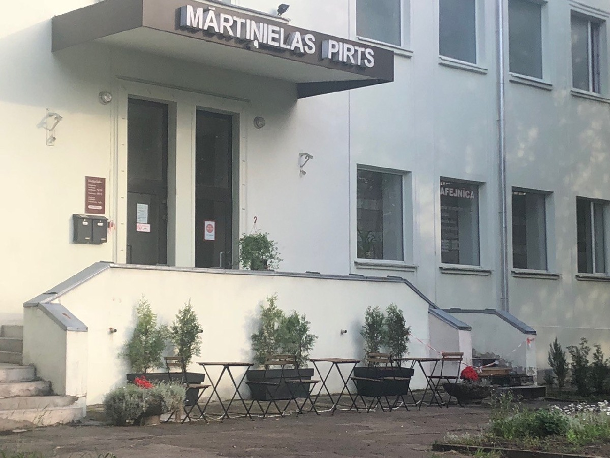
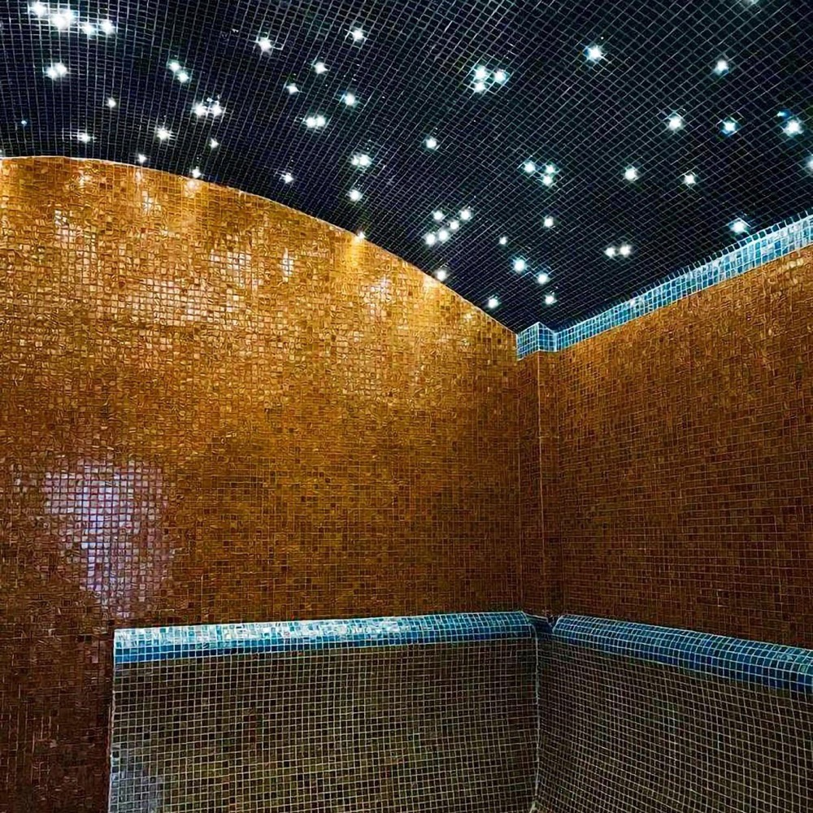
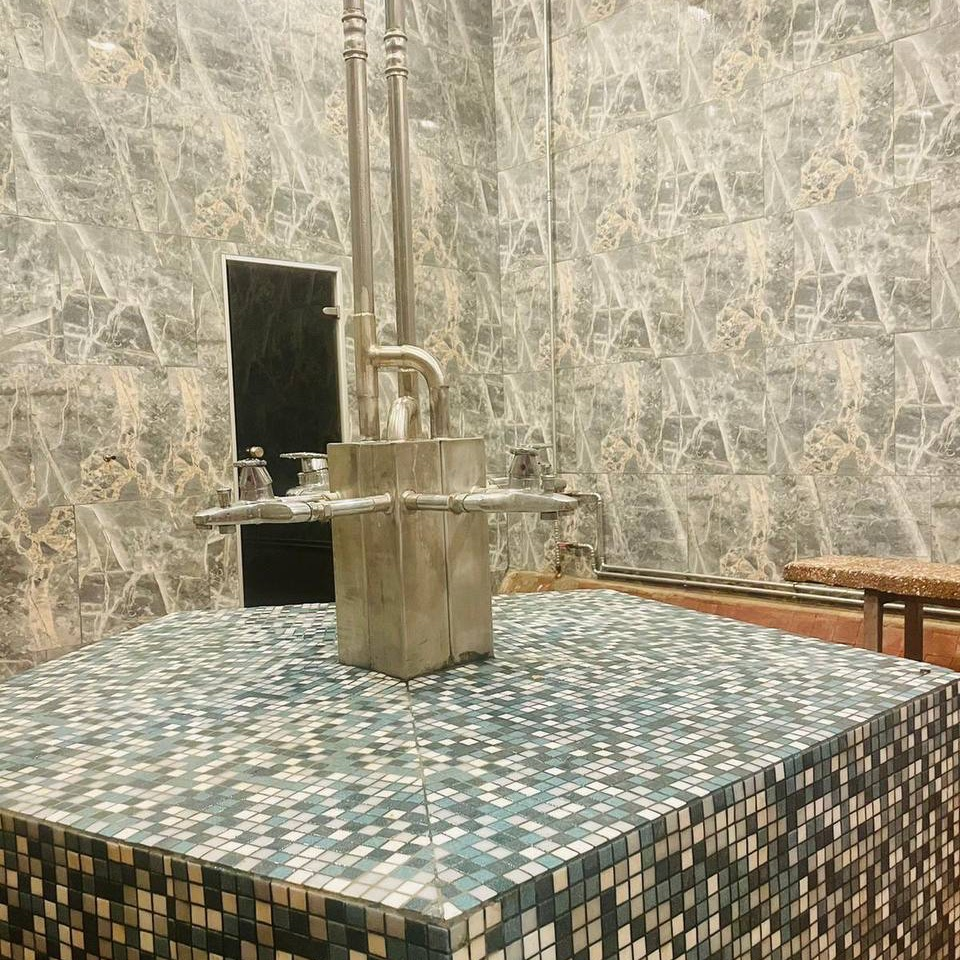
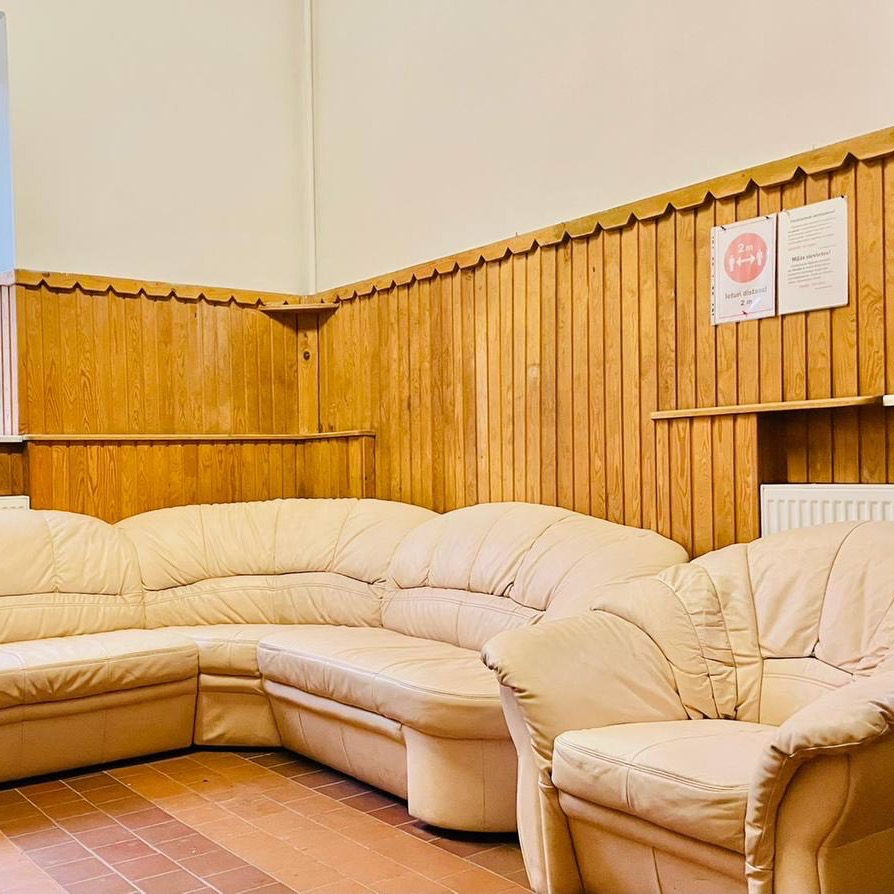

Sagatavoja Nikita · ngoloveckis@gmail.com · viss pārbaudīts šodien: Google Places, zl.lv, malkaspirts.lv, OpenStreetMap

Jums ir sava lapa — malkaspirts.lv, ar cenām, slotiņām un galeriju. Bet cilvēks, kurš jūs atrod Google kartēs un nospiež „Vietne”, tur nenonāk.
Mārtiņa iela 12 · 4,0 ★ (80)
Vietnezl.lv kataloga lapa. Jūsu īstā lapa tur ir viena saite starp citām — vēl viens klikšķis, ja cilvēks to pamana.
„Mārtiņielas komplekss | Malkas pirts Pārdaugavā” — jūsu pašu lapa, ar cenām un darba laiku.
Trīs avoti saka LV-1048. Google saka LV-1004 — tas ir jūsu otras pirts, Jelgavas ielā 53, indekss.
| Kur | Adrese |
|---|---|
| Google kartes | Mārtiņa iela 12, Rīga, LV-1004 |
| Jūsu lapa malkaspirts.lv | Mārtiņa 12, Rīga, LV-1048 |
| zl.lv katalogs | Mārtiņa 12, Rīga, LV-1048 |
| OpenStreetMap | Mārtiņa iela 12, Rīga, LV-1048 |
Labojums turpat: Rediģēt profilu → Atrašanās vieta → Adrese. Sīkums — bet jo vienādāk adrese rakstīta visur, jo drošāk kartes un navigācija saprot, ka runa ir par vienu vietu.
| Ko pārbaudīju | Jūsu lapa | ||
|---|---|---|---|
| Darba laiks | P 9–19 · S, Sv 9–21:30 | P 9–19 · S, Sv 9–21:30 | sakrīt |
| Tālrunis | 67 471 205 | 67 471 205 | sakrīt |
| Fotogrāfijas | Ierakstā ir jūsu pašu attēli — baseins, tvaika telpa, atpūtas istaba | labi | |



Šīs ir piecas atsauksmes, ko Google šobrīd izceļ kā būtiskākās. Jaunākajai ir trīs gadi.
Un pēdējā no tām skan šādi:
„Jā, ir labi, rīt iešu atkal!”Google atsauksme · 1 ★ · pirms 3 gadiem
Izskatās pēc nepareizi noklikšķinātām zvaigznēm. Pieklājīga atbilde zem tās neko nemaksā — un ikviens, kas lasa, redz, ka pirtī kāds klausās. Šo ainu maina tikai jaunas atsauksmes; tāpēc nākamā sadaļa.
„laiks šeit ir norāvis roceni, bet tas šai vietai pat piestāv. laba pirts.”Google atsauksme · 5 ★ · pirms 8 gadiem
Šis QR kods ved tieši uz jūsu Google atsauksmju formu — bez meklēšanas. Izdrukājiet un nolieciet pie kases vai kafejnīcā: apmierināts viesis ar dvieli pār plecu ir labākais brīdis palūgt.
search.google.com/local/writereview?placeid=ChIJ6zANHBzQ7kYRPkAy3h_hps8
Par šo pārbaudi nekas nav jāmaksā un nekas nav jāparaksta. Labojumus 1 un 2 varat veikt paši jau šodien.